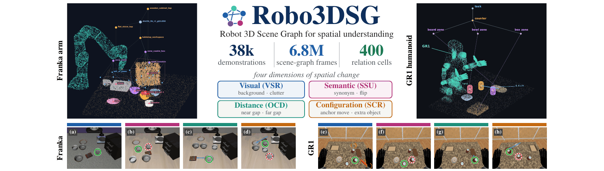
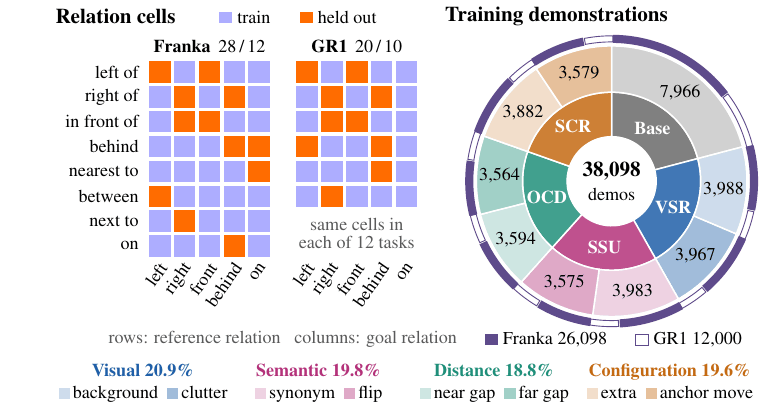
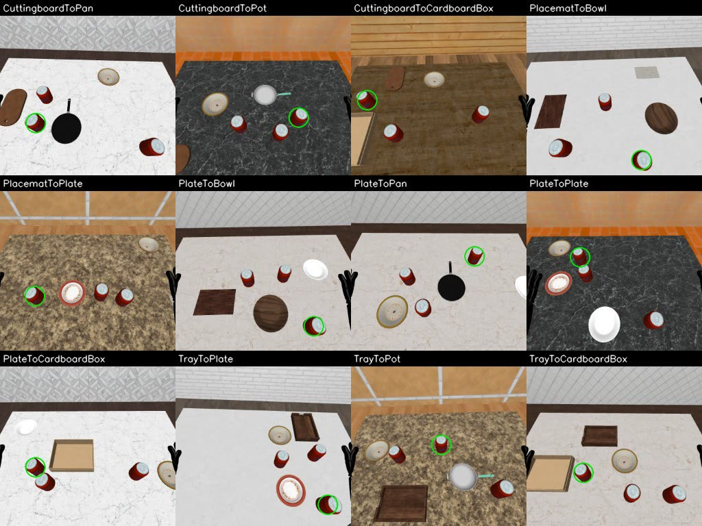
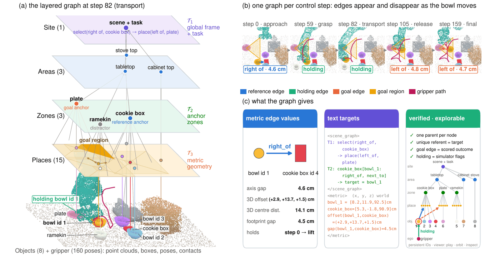
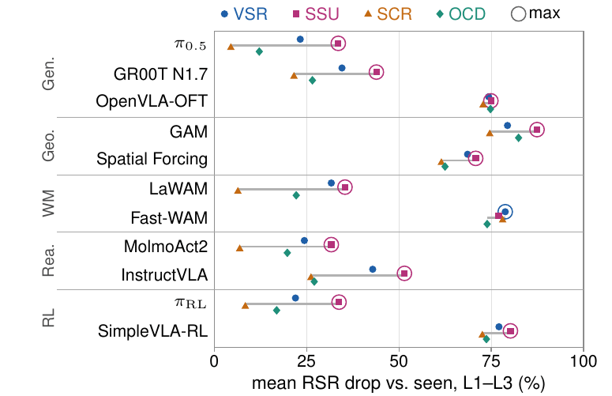
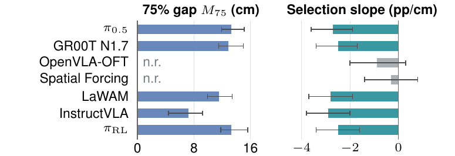
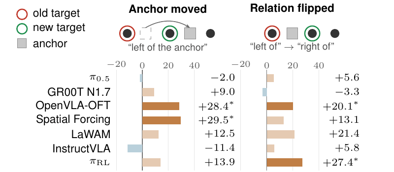

Abstract
A vision-language-action model (VLA) that succeeds 99% of the time on LIBERO-Spatial can still fail to tell the correct object when visually identical objects are rearranged. Current benchmarks cannot expose this, because they score whether a task finished, and cannot distinguish between errors in selecting the intended object based on its spatial relation and errors in achieving the requested relation. We introduce Robo3DSG (Robot 3D Scene Graph), a dataset and benchmark that measures spatial understanding at the level of the relation. The dataset contains 38k demonstrations over 400 relation cells, of which 132 are held out, and spans a single arm and a bimanual humanoid. Four evaluation levels compose changes along four dimensions: visual, semantic, object–anchor distance, and spatial configuration. Every layout, demonstration step, and evaluated rollout carries a hierarchical 3D scene graph whose layers run from the task to the objects and the end effector, and whose edges store the measured value of every relation. We define spatial understanding as relational binding, metric acuity, and relational production, and measure each with its robustness under composition. These results suggest that current VLAs remain limited in grounding spatial instructions in metric geometry and updating object selection when relations change.
One Task Template
“Pick up the bowl right of the cookie box and place it left of the plate.”
Every scene holds three visually identical candidates (bowls on Franka, cans on GR1) and named anchors, so the spatial relation is the only information that identifies the target. A reference relation selects one candidate and a goal relation specifies where to place it; a reference–goal pair is a relation cell. Each relation is a geometric rule in a fixed scene frame, and the same rules resolve referents and score rollouts. The template tests three abilities:
Relational binding
Bind the words to the right candidate and the right anchor, also when another candidate satisfies the relation with an unnamed anchor.
Metric acuity
Keep selecting correctly as the measured target–anchor gap leaves the training range.
Relational production
Achieve the requested placement relation, without disturbing the other objects.
Benchmark Design
Changes are organised into four dimensions with two sub-factors each. Some changes preserve the target (appearance, wording, distance); others require selecting a different object (relation flip, anchor move).
Visual Spatial Robustness
Changes illumination and backgrounds, or adds unnamed clutter. The target is preserved.
- Background (sampled jointly with lighting)
- Clutter
Semantic Spatial Understanding
Substitutes synonyms, or flips the relation word so that a different referent is selected.
- Synonym
- Flip (new target)
Object-Centric Distance
Expands near and far target–anchor gaps beyond their training bins (contact relation on excluded).
- Near gap
- Far gap
Spatial Configuration Robustness
Adds identical candidates, or moves the reference anchor so that the target changes.
- Extra bowls / cans
- Anchor move (new target)
Difficulty levels
Comparing L2 with medium and L3 with hard separates the strength of a change from the composition of changes. All items are checked for a unique referent, reachability and a feasible placement.
| Setting | Training (seen) | Easy | Medium | Hard | |
|---|---|---|---|---|---|
| VSR | Background | S | S, new mix | half U | U |
| Lighting | 0.8–1.25 | 0.7–0.8 or 1.25–1.4 | 0.35–0.55 or 1.5–1.7 | 0.27–0.35 or 1.7–1.95 | |
| Clutter | 1–2, S | 3, S | 4–5, half U | 5–6, U | |
| SSU | Synonym | S | S, new sentence | U | U, longest form |
| Flip | reference edit | reference edit | + goal edit or U wording | U wording; goal optional | |
| OCD | Near gap | 0.5–4 | 5–6.5 | 8–12 | 12–16 |
| Far gap | 4–8 | 8–10 | 12–16 | 16–20 | |
| SCR | Extra bowls/cans | 0–1 | +1 | +2 | +2 |
| Anchor move | one anchor | new target | new target | ≥14 cm; new target |

Two Embodiments, One Recipe
Both subsets use the same task template, hold out about 30% of the relation cells, and generate demonstrations for the baseline and all eight sub-factors, keeping only demonstrations that pass the evaluation success rule. About one fifth of the demonstrations are baseline and the rest is spread evenly over the sub-factors.
Robo3DSG-Franka
A Franka Panda arm selects among three identical bowls on the LIBERO tabletop. Eight reference and five goal relations define 40 relation cells (28 train / 12 held out), with ten layouts per training cell. A MimicGen-style replay generates the baseline demonstrations and a SkillGen-style planner the perturbed ones: 26,098 demonstrations.
Robo3DSG-GR1
A Fourier GR1 humanoid selects among three identical cans on a RoboCasa kitchen counter. Six reference and five goal relations define 30 cells (20 train / 10 held out), repeated in twelve tasks built from the RoboCasa GR1 pick-and-place tasks (360 cells, 120 held out). A scripted planner generates 12,000 demonstrations, 1,000 per task.
| Setting | Robo3DSG-Franka | Robo3DSG-GR1 |
|---|---|---|
| Robot | Franka Panda arm | Fourier GR1 humanoid |
| Action | End-effector delta + gripper | 29 joint targets |
| Cameras | Agent view + wrist | Head (egoview) |
| Candidates | 3 identical bowls | 3 identical cans |
| Anchors | Cookie box, ramekin, plate | 3 containers per task |
| Cells (train / held out) | 40 (28 / 12) | 360 (240 / 120) |
| Horizon (steps) | 220 | 720 |
| Disturbance limit | 3 cm / 30° | 2 cm / 15° |

Every Trajectory is a Hierarchical 3D Scene Graph
Every layout, demonstration step, and evaluated rollout carries a directed 3D scene graph. Object nodes store identity, pose, size and bounding-box centres; relation edges store directional offsets, footprint gaps and centre distances. Three tiers organise six layers (site/task, areas, zones, places, objects, end-effectors): T1 splits the task into selection and placement and resolves the target, T2 groups candidates by anchor and flags cross-anchor traps, T3 attaches the metric geometry, the goal and the end-effector trajectory. Snapshots are recorded at 20 Hz with persistent identities. One representation defines the task, scores the rollout, and provides supervision targets. Policies receive only images, the instruction and the robot state.

The graph over time
One Franka demonstration (“pick up the black bowl right of the cookie box and place it left of the plate”) replayed from its scene graph. The reference edge identifies the target until the grasp, the holding edge records grasp and transport, and the goal edge becomes true at release. The timeline below the scene shows every edge per control step and the measured gap to the goal anchor in cm.
Rollouts are scored from the same graph: a rollout counts only if the first object lifted is the target, the target ends in the goal relation, and no other object is disturbed.
Demonstrations and Rollouts
Demonstrations from both embodiments for the baseline and every sub-factor, plus zero-shot rollouts of a released LIBERO checkpoint. Videos play at 1.5× speed (rollouts: real time) and start when they scroll into view.
No clips match this filter combination.
Results
Scores are the relational success rate (RSR, %): a rollout counts only if the first object lifted is the target (Si = 1), the target ends in the goal relation (Ci = 1) and nothing else is disturbed (Di = 0), so RSR = (1/N) Σi SiCi(1−Di). Unlike LIBERO success, RSR fails a rollout that first lifts a wrong candidate or knocks over another object. On Franka, each checkpoint runs 6,000 rollouts (6 conditions × 8 variants × 125 scenes); on GR1, 5,700. 0-shot is the released checkpoint averaged over the six conditions; trained is fine-tuned on our demonstrations. Best per column in bold.
Robo3DSG-Franka: 11 policies
| Family | Policy | LIBERO | 0-shot | trained on Robo3DSG-Franka | |||||
|---|---|---|---|---|---|---|---|---|---|
| Spatial | avg. | seen | L1 | L2 | L3 | medium | hard | ||
| Generalist | π0.5 | 98.8 | 2.7 | 83.9 | 75.1 | 67.6 | 61.9 | 56.7 | 21.2 |
| GR00T N1.7 | 97.7 | 0.9 | 87.8 | 67.7 | 60.2 | 52.0 | 50.0 | 18.7 | |
| OpenVLA-OFT | 97.6 | 2.9 | 63.3 | 18.5 | 15.6 | 14.9 | 11.8 | 7.0 | |
| Geometry | GAM | 98.6 | 0.1 | 22.4 | 4.7 | 4.1 | 4.0 | 4.0 | 2.7 |
| Spatial Forcing | 99.4 | 1.7 | 55.7 | 20.2 | 18.6 | 17.8 | 17.0 | 10.0 | |
| World model | LaWAM | 98.4 | 2.2 | 87.3 | 73.9 | 66.2 | 58.1 | 51.9 | 13.8 |
| Fast-WAM | 98.2 | 1.1 | 50.1 | 13.1 | 11.4 | 10.0 | 7.5 | 3.8 | |
| Reasoning | MolmoAct2 | 97.8 | 3.4 | 79.5 | 68.3 | 63.4 | 56.9 | 48.9 | 20.2 |
| InstructVLA | 97.3 | 0.7 | 76.8 | 54.4 | 47.1 | 42.5 | 36.9 | 12.1 | |
| RL | πRL | 99.6 | 3.1 | 91.6 | 79.0 | 73.9 | 65.7 | 61.5 | 25.2 |
| SimpleVLA-RL | 99.4 | 0.3 | 62.6 | 15.6 | 15.4 | 14.1 | 11.5 | 7.5 | |
LIBERO-Spatial: published success. Robo3DSG columns: RSR. Easy = L1–L3.
Robo3DSG-GR1: 6 policies
| Family | Policy | 0-shot | trained on Robo3DSG-GR1 | |||||
|---|---|---|---|---|---|---|---|---|
| avg. | seen | L1 | L2 | L3 | medium | hard | ||
| Generalist | π0.5 | 0.0 | 39.6 | 37.2 | 29.5 | 29.8 | 27.2 | 12.1 |
| GR00T N1.7 | 0.1 | 25.0 | 16.7 | 15.9 | 13.3 | 13.8 | 5.2 | |
| Geometry | GAM | – | 21.5 | 10.8 | 7.0 | 6.6 | 6.2 | 3.8 |
| World model | LaWAM | 0.0 | 58.5 | 34.8 | 21.8 | 27.2 | 19.5 | 12.6 |
| Reasoning | MolmoAct2 | – | 26.0 | 24.4 | 21.4 | 19.5 | 22.4 | 14.2 |
| RL | πRL | – | 41.7 | 36.7 | 30.8 | 28.3 | 27.5 | 13.0 |
0-shot uses the GR1-compatible checkpoint before fine-tuning (–: no 29-D GR1 action head before fine-tuning).

Key Findings
- LIBERO-Spatial success does not guarantee spatial generalization. All eleven policies score 97.3–99.6% on LIBERO-Spatial and at most 3.4% RSR zero-shot. After training on our demonstrations they still differ widely on easy scenes, and all fall substantially from seen to hard (best: 91.6% → 25.2%).
- Relational selection degrades with target–anchor distance. Policies that select reliably lose about 2.5–3 points of selection per centimetre and fall to 75% within about 5 cm beyond the training range. A flat distance curve signals a policy that selects poorly at every gap.
- Old-target persistence is policy-dependent. After an anchor move or a relation flip, some policies' wrong picks favour the previously correct bowl over the other distractor.
- The cost of composition depends on the policy. Composed changes are hard, but their loss is not uniformly greater than the sum of the individual losses.
- Nearest-object selection is a shared weakness. Nearest has the lowest selection rate for all reported policies; wrong picks on proximity relations often satisfy the relation with the wrong anchor (anchor traps).


BibTeX
@misc{robo3dsg2026,
title = {Robo3DSG: Benchmarking Spatial Understanding
in Vision-Language-Action Models},
author = {Anonymous},
note = {Under review},
year = {2026}
}